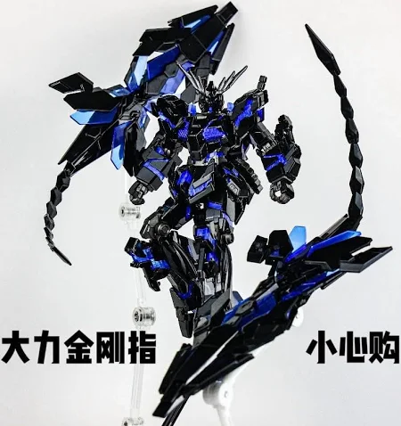

High Grade (HG)
High Grade interests me because it offers a balance between an approachable build and a model that looks good on display. It is the grade I would explore when I want plenty of designs to compare.
What is High Grade?
High Grade Gundam kits are commonly 1/144 scale. The line offers a wide selection of mobile suits with relatively straightforward construction. Many standard kits also cost less than models in more elaborate grades. HG can appeal to both first-time builders and people who want to collect different designs.
The HG 1/144 Electroplated Unicorn Destroy Mode Phoenix model has an appearance quite unique and a great feeling of coolness when exhibiting it. This is what mater the most in HG, found a model that match your style not something that is pricey.
Where to buy? -> Walmart.

How to approach the build
Your focus with an HG kit would be making the basic assembly look clean. Instead of treating it as something to finish quickly, you should use it as a chance to develop a consistent routine.
- Check the instructions before removing parts.
- Pay attention to how neatly I remove and clean up pieces.
- Compare both sides of the model for missed steps.
These are personal advice rather than official requirements for this grade.
Back to the grade comparison · Share your building interests